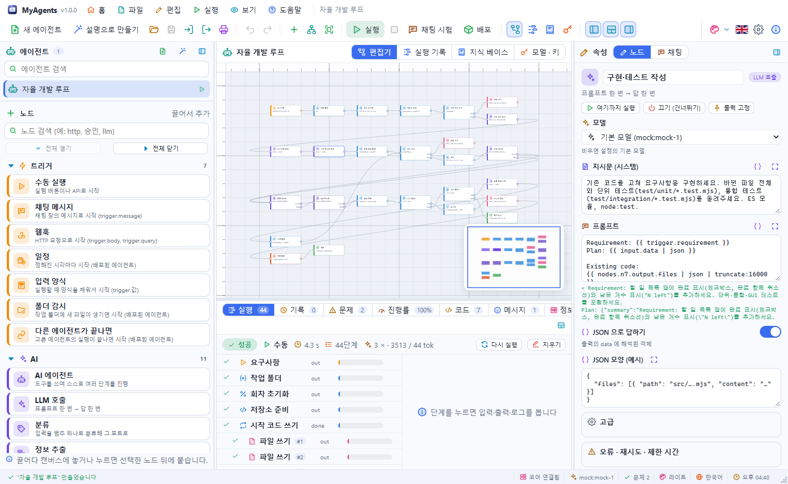
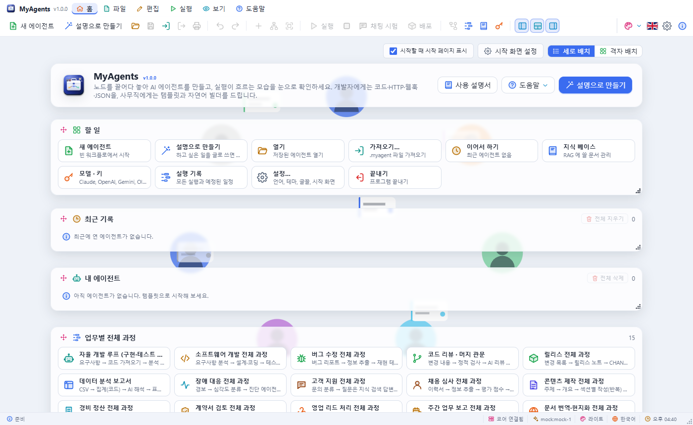
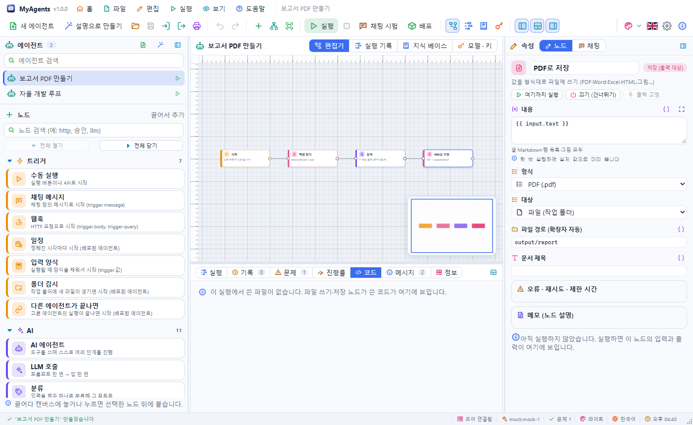
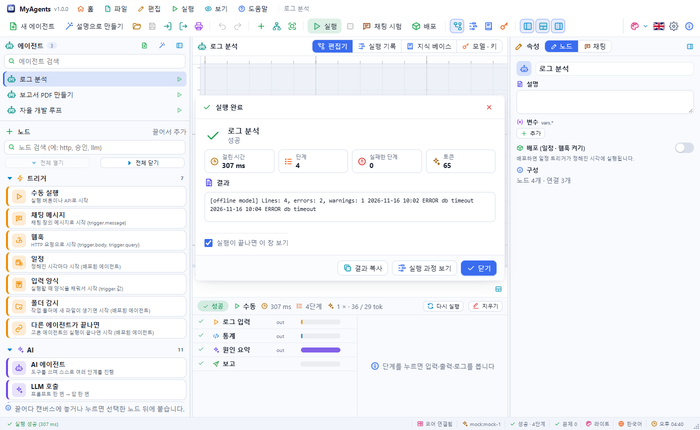
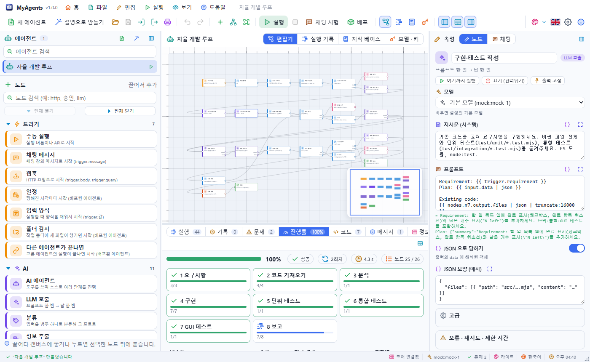
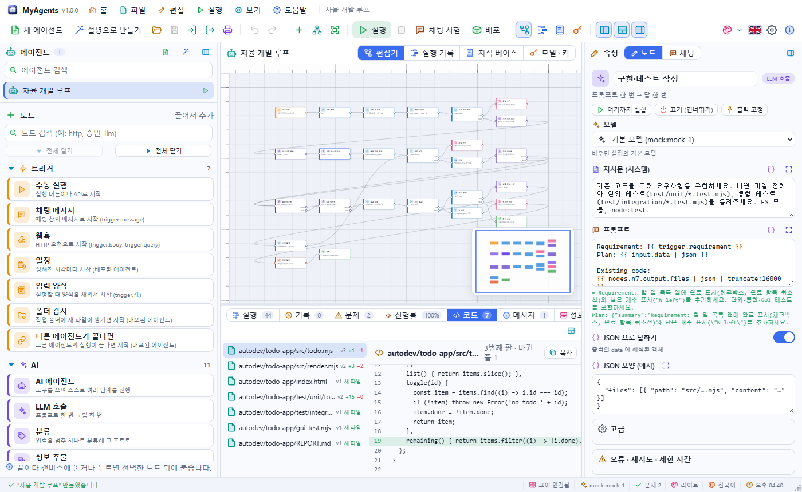
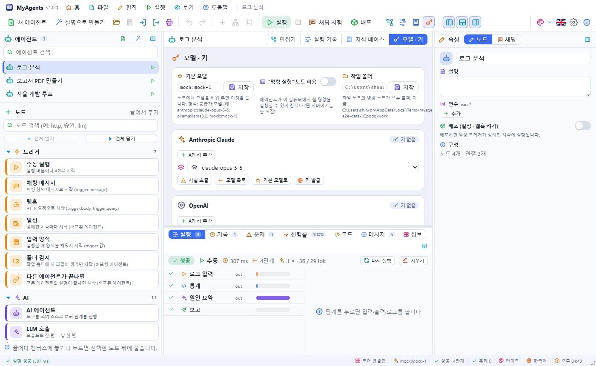
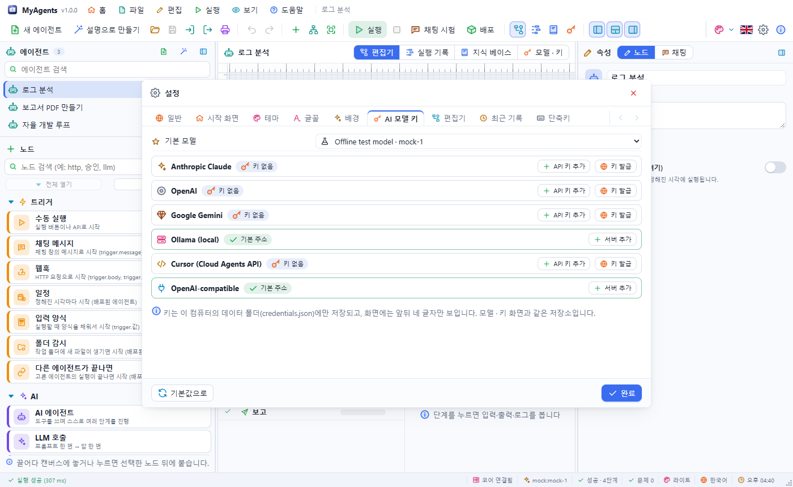
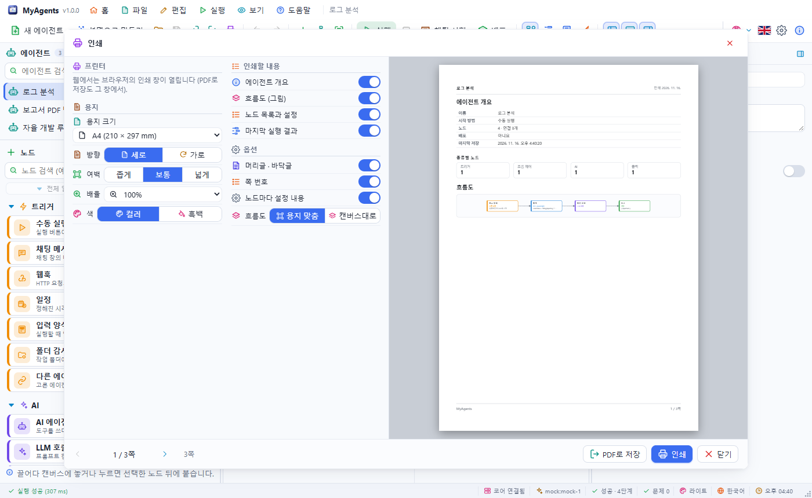
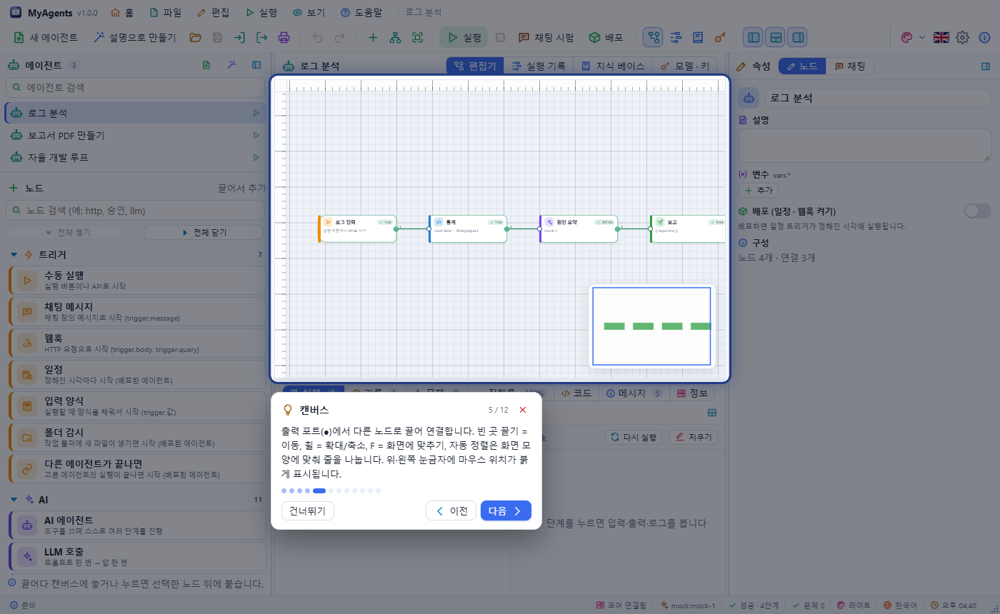

MyAgents — 사용 설명서
MyAgents란
MyAgents는 AI 에이전트와 자동화를 노드를 끌어다 놓아 만드는 프로그램입니다. 트리거, AI, 도구, 조건, 반복, 사람 승인을 노드로 놓고 선으로 이으면 워크플로가 됩니다. 실행하면 캔버스에서 어느 노드가 돌고 있는지, 데이터가 어느 선을 따라 흐르는지, 몇 번 반복했는지, 어디서 실패했는지 바로 보입니다.
- 개발자: 코드(JavaScript) 노드, HTTP 요청, 웹훅, JSON 표현식, 명령 실행, 노드별 입출력 JSON, 출력 고정(pin)
- 사무직: 16가지 템플릿, "설명으로 만들기"(하고 싶은 일을 글로 쓰면 초안 생성), 승인 단계, 채팅 시험
키가 없어도 오프라인 시험 모델로 모든 템플릿이 돌아갑니다. 실제 모델은 "모델 · 키" 화면에서 연결합니다.
화면 구성

| 위치 | 내용 |
|---|---|
| 메뉴 · 툴바 | 파일, 편집, 실행, 보기, 도움말. 툴바의 실행(▶), 채팅 시험, 배포 |
| 왼쪽 위 | 내 에이전트 목록 (검색, 우클릭 메뉴) |
| 왼쪽 아래 | 노드 팔레트: 끌어다 놓거나 누르면 선택한 노드 뒤에 붙습니다. 위의 "전체 열기 / 전체 닫기"로 그룹을 한 번에 펼치고 접습니다 |
| 가운데 | 캔버스 (편집기) · 실행 기록 · 지식 베이스 · 모델 · 키 |
| 오른쪽 | 노드 탭(선택한 노드의 설정, 아무것도 선택하지 않으면 에이전트 설정) · 채팅 탭 |
| 아래 | 실행(단계별 시간 막대, 입력·출력·로그, 승인 카드) · 기록 · 문제 · 메시지 · 정보 |
패널 머리의 오른쪽 끝 단추(툴바와 같은 아이콘)로 패널을 접습니다. 접힌 패널은 아이콘과 제목만 보이는 좁은 띠가 되고, 띠를 누르면 다시 펼쳐집니다.
시작 화면

시작 화면은 세로 배치(카드 한 줄에 하나)가 기본입니다. 오른쪽 위에서 "격자 배치"로 바꿀 수 있습니다. 카드는 손잡이로 옮기고 오른쪽 아래 모서리로 크기를 바꿉니다. 맨 위 프로그램 정보(아이콘 · 이름 · 설명 · 단추)는 움직이지 않습니다.
- 최근 기록: 최근에 연 에이전트. 줄 끝의 ✕ 는 기록에서만 지우고(에이전트는 남음), "전체 지우기"는 기록을 비웁니다.
- 내 에이전트: 줄 끝의 휴지통은 그 에이전트를 삭제하고, "전체 삭제"는 확인 후 모든 에이전트를 지웁니다(실행 기록은 남음).
캔버스 조작
- 노드 추가: 팔레트에서 끌어다 놓기, 팔레트 항목 누르기, 캔버스 더블클릭, 툴바 "+", 키
A - 연결: 노드 오른쪽의 출력 포트(●)에서 다른 노드로 끌기. 빈 곳에 놓으면 이어 붙일 노드를 고르는 메뉴가 뜹니다
- 도구 연결: AI 에이전트 아래의 "도구" 포트(◆)에서 노드로 선을 그으면 그 노드(와 그 뒤의 흐름)가 에이전트의 도구가 됩니다. 다른 AI 에이전트를 이으면 다중 에이전트가 됩니다
- 이동 · 선택: 노드 끌기, 빈 곳 끌기 = 화면 이동, Shift/Ctrl+끌기 = 상자 선택, 휠 = 확대/축소
- 편집:
Delete삭제,Ctrl+C/Ctrl+V복사·붙여넣기,Ctrl+D복제, 화살표 = 미세 이동,Ctrl+Z/Ctrl+Y되돌리기 - 정리: "자동 정렬"(Ctrl+Shift+A)은 캔버스 모양에 맞춰 긴 흐름을 여러 줄로 나눠 배치합니다. "화면에 맞추기"(F)는 전체가 보이게 가로·세로 가운데로 맞춥니다. 미니맵을 눌러도 이동합니다
- 격자와 눈금자: 바탕의 옅은 5 × 5 격자는 위·왼쪽 눈금자와 같은 간격이며, 확대·축소하면 너무 촘촘하거나 성글어지기 전에 5배 간격으로 다시 그려집니다. 마우스 위치는 눈금자에 붉은 선으로 표시됩니다
노드 종류
| 분류 | 노드 |
|---|---|
| 트리거 | 수동 실행(시험 입력 JSON), 채팅 메시지, 웹훅, 일정(분 간격·매일·매주·cron), 입력 양식(실행할 때 칸을 채움), 폴더 감시(새 파일), 다른 에이전트가 끝나면 |
| AI | AI 에이전트(도구·기억·최대 단계), LLM 호출(JSON 답 가능), 분류(범주마다 포트), 정보 추출, 요약, 번역, 감정 분류, 그림 분석, 다시 쓰기, 핵심어 뽑기, 문서에 묻기 |
| 지식 | 지식 검색(RAG), 지식 추가, 글 조각내기, 지식으로 답하기(근거 포함) |
| 흐름 제어 | 조건 분기, 값으로 분기, 반복(각 항목), 합치기, 변수 설정, 텍스트 템플릿, 코드(JavaScript), 기다리기, 중지, 카운터, A/B 나누기, 품질 검사, 묶음 나누기 |
| 데이터 변환 | CSV, 목록 거르기·정렬·집계·나누기·정규식·중복 제거, 형식 바꾸기, 표 만들기, 열 계산, 열 고르기, 평평하게 |
| 개발 도구 | 테스트 실행, 프로젝트 읽기, git, SQLite, 차이 비교, 코드 검사(lint), 빌드 |
| 도구·데이터 | HTTP 요청, 웹 페이지 읽기, 다른 에이전트 호출, 파일 읽기·쓰기, 명령 실행, JSON 변환, 날짜·시간, 팀 채팅 알림, 읽기(입력 소스), 저장(출력 대상), RSS·뉴스 피드 |
| 사람 참여 | 승인 요청, 사람에게 묻기, 알림 |
| 출력 | 응답 (실행 결과 · 채팅 답 · 웹훅 응답) |
| 메모 | 캔버스 위의 메모 (실행되지 않음) |
모든 실행 노드에는 재시도 횟수, 재시도 간격, 제한 시간, 오류 처리(실행 중지 / 오류를 출력으로 계속 / 오류 포트로 보내기)가 있습니다.
입력 소스와 출력 형식
읽기(입력 소스) 노드는 작업 폴더의 파일, URL, 직접 쓴 글, 앞 단계의 값에서 읽어 형식대로 풉니다. 저장(출력 대상) 노드는 값을 고른 형식으로 파일에 쓰거나(확장자 자동) 다음 단계로만 넘깁니다(data: URL).
| 형식 | 읽기 결과 | 쓰기 |
|---|---|---|
| 텍스트 · Markdown | text (Markdown은 headings, html 도) | 그대로 |
| HTML | text, markdown, title | Markdown을 꾸민 HTML 문서로 |
| CSV · JSON · Excel(.xlsx) | items(행 목록), columns, count | 행 목록을 표로 |
text, pages | Markdown을 A4 문서로 (한글 포함, 제목·목록·쪽 번호) | |
| Word(.docx) | text, markdown(제목·목록) | 제목·목록·굵게를 살린 문서 |
| 그림(png·jpg·gif·webp·bmp·svg) | width, height, dataUrl | 그림 그대로, 글이면 SVG 카드 |
그림은 그림 분석 노드로 모델에게 보여 줄 수 있습니다(Claude, OpenAI, Gemini, Ollama의 비전 모델, Cursor).

표현식
설정 칸에 {{ … }}를 쓰면 앞 단계의 값을 넣습니다.
| 이름 | 뜻 |
|---|---|
input | 바로 앞 노드의 출력 (LLM·에이전트는 input.text) |
trigger | 트리거가 받은 값 (채팅: trigger.message, 웹훅: trigger.body, trigger.query) |
nodes.<노드 이름>.output | 이름으로 다른 노드의 출력 |
vars.<이름> | 변수 (에이전트 설정의 변수, 변수 설정 노드) |
item, index | 반복 안에서 지금 항목과 순번 |
필터: | upper, | lower, | trim, | json, | length, | join:", ", | truncate:100, | default:"없음", | pluck:"name", | first, | last, | date, | parse 등. a || b는 앞이 비면 뒤를 씁니다. 한 번 실행하면 각 칸 아래에 실제 값으로 계산한 미리보기가 나옵니다. {} 버튼은 쓸 수 있는 변수 목록을 보여 줍니다.
실행과 결과 보기
- 실행(Ctrl+Enter): 수동 트리거의 시험 입력으로 실행합니다. 웹훅 트리거면 요청 본문을 물어봅니다. 저장하지 않은 변경도 그대로 실행됩니다(기록에 "저장 전" 표시)
- 실행 중: 돌고 있는 노드는 파랗게 빛나고, 끝난 노드는 초록(성공) 또는 빨강(실패), 기다리는 노드는 주황입니다. 데이터는 선을 따라 점으로 흐르고, 반복한 노드에는
×N, 포트에는 지나간 횟수가 붙습니다. 에이전트가 도구를 부르면 노드 위에 도구 이름이 보입니다 - 아래 "실행" 탭: 단계마다 시간 막대(언제 얼마나 걸렸는지)가 있고, 누르면 그 단계의 입력, 출력, 로그를 봅니다
- 여기까지 실행: 노드의 설정에서 그 노드와 앞 노드만 실행합니다
- 출력 고정: 한 번 실행한 노드의 출력을 고정하면 다음 실행부터 그 노드는 실제로 돌지 않고 고정값을 씁니다. API 비용 없이 뒤쪽을 시험할 때 씁니다
- 기록 탭 / 실행 기록 화면: 지난 실행을 다시 열면 캔버스에 그때의 상태가 그려집니다
- 중지(Shift+F5)

진행률 탭은 노드의 단계(phase)별 진행, 회차, 테스트 노드의 회차별 통과·실패를 보여 줍니다. 코드 탭은 실행이 쓴 파일, 판 수, 바뀐 줄(+/−)을 보여 주고 파일을 고르면 내용과 바뀐 줄을 강조해 보여 줍니다.


사람 승인
"승인 요청" 노드에 오면 실행이 멈추고 노드가 주황으로 깜박입니다. 아래 실행 탭의 카드에서 의견을 쓰고 승인 또는 거절을 누르면 그 포트로 이어집니다. 기다릴 시간을 정하면 지나서 거절로 갑니다. "사람에게 묻기"는 양식 칸을 채워 보냅니다.
채팅 시험
"채팅 메시지" 트리거가 있는 에이전트는 오른쪽 채팅 탭에서 대화로 시험합니다. 답마다 실행이 캔버스에 보이고, 말풍선의 작은 버튼으로 그 실행을 엽니다. AI 에이전트의 "대화 기억"이 켜져 있으면 같은 세션의 앞 대화를 기억합니다. "새 대화"는 새 세션, "기억 지우기"는 이 에이전트의 기억을 모두 지웁니다.
웹훅과 일정 (배포)
- 저장한 에이전트에 웹훅 트리거가 있으면 에이전트 설정(오른쪽, 아무것도 선택하지 않은 상태)에 웹훅 주소가 나옵니다. 주소에 비밀값이 들어 있어 따로 로그인이 필요 없고, 새로 만들 수 있습니다. 응답 방식은 "끝날 때까지 기다려 결과를 응답" 또는 "바로 202"입니다. 응답 노드의 HTTP 상태도 정할 수 있습니다
- 배포를 켜면 일정 트리거가 정해진 시각에 실행됩니다(프로그램이 켜져 있는 동안). 배포할 때 오류가 있으면 문제 탭에 보여 주고 배포하지 않습니다
지식 베이스 (RAG)
"지식 베이스" 화면에서 만들고, 파일(txt, md, html, csv, json, 코드 …)을 추가하거나 글을 붙여넣거나 웹 페이지를 가져옵니다. 문서는 이 컴퓨터에만 저장되며 BM25 키워드 검색으로 찾습니다(외부 임베딩 서비스 불필요, 한국어는 두 글자 조각까지 색인). "검색 시험"으로 에이전트가 무엇을 찾을지 미리 봅니다. 처음 실행하면 샘플 지식 베이스(환불·배송·상담 시간·API)가 만들어집니다.
모델 · 키
| 공급자 | 설정 |
|---|---|
| Anthropic Claude | API 키 (기본 모델 claude-opus-5-5). 환경 변수 ANTHROPIC_API_KEY 도 읽습니다 |
| OpenAI | API 키 (OPENAI_API_KEY) |
| Google Gemini | API 키 (GEMINI_API_KEY) |
| Ollama | 로컬 서버 주소 (기본 http://127.0.0.1:11434), 키 없음. 설치·실행 상태와 모델 수가 카드에 보입니다 |
| Cursor | Cursor 대시보드의 API 키 (CURSOR_API_KEY). 호출마다 클라우드 에이전트를 실행해 결과 글을 받습니다. 서버 주소 뒤에 #https://github.com/org/repo@branch 를 붙이면 그 저장소에서 일합니다 |
| OpenAI 호환 | LM Studio, vLLM, Groq, OpenRouter 등 서버 주소와 키 |
| 오프라인 시험 모델 | 네트워크·키 없음. 템플릿 시험용 |
카드마다 모델을 골라 "시험 호출"로 연결을 확인하고, "모델 목록"으로 쓸 수 있는 모델을 불러오고, "기본 모델로"를 누르면 모델을 비워 둔 노드가 그것을 씁니다. 키는 데이터 폴더의 credentials.json에만 저장되고 화면에는 앞뒤 네 글자만 보입니다. 같은 화면에서 "명령 실행" 노드 허용과 작업 폴더(파일·명령 노드가 쓰는 폴더)를 정합니다.
로컬 Ollama: 설치되어 있지 않거나, 꺼져 있거나, 고른 모델이 없으면 시험 호출이나 실행이 실패할 때 창이 떠서 자동 설치(Windows는 winget 또는 공식 설치 파일, macOS는 Homebrew, Linux는 공식 스크립트) · 시작 · 모델 내려받기를 진행률과 함께 해 줍니다. 처음 불러오는 큰 모델은 몇 분 걸릴 수 있어 시간 제한 없이 기다립니다. 웹 서버에서는 다운로드 페이지만 안내합니다.

설정 › AI 모델 키 탭에서도 공급자별 키를 추가·변경·삭제하고 기본 모델을 고를 수 있습니다(같은 저장소).

실행 결과 창 · 인쇄
실행이 끝나면 결과 창이 상태, 걸린 시간, 단계 수, 실패한 단계, 토큰, 결과를 보여 줍니다("결과 복사", "실행 과정 보기"). 설정 › 편집기 또는 창 아래의 확인란으로 끌 수 있습니다.
인쇄(Ctrl+P)는 별도의 창입니다. 왼쪽에서 프린터와 매수, 용지 크기·방향·여백·배율·색, 머리글·바닥글·쪽 번호, 인쇄할 내용(에이전트 개요, 흐름도, 노드와 설정, 마지막 실행)을 고르면 오른쪽 미리보기가 바로 바뀝니다. 흐름도는 "용지 맞춤"이면 용지 모양에 맞게 다시 배치됩니다. 인쇄를 누르면 데스크톱에서는 고른 프린터로 바로 인쇄되고, "PDF로 저장"도 있습니다.

튜토리얼
시작 화면이 열릴 때 "튜토리얼을 실행할까요?" 창이 뜹니다. 튜토리얼 시작을 누르면 화면의 각 부분(시작 화면, 템플릿, 설명으로 만들기, 팔레트, 캔버스, 속성, 실행, 진행률·코드, 채팅, 모델·키, 인쇄, 도움말)을 차례로 비추며 설명합니다. 이전·다음 단추나 ←/→ 키로 움직이고 Esc 로 끝냅니다. 창 아래의 "시작할 때 이 창 보이기"를 끄거나 설정 › 시작 화면 › "튜토리얼 실행 팝업창 보여주기"를 끄면 다음부터 뜨지 않으며, 도움말 › 튜토리얼로 언제든 다시 볼 수 있습니다.

설명으로 만들기
툴바의 설명으로 만들기(Ctrl+Shift+N)에 하고 싶은 일을 쓰면 워크플로 초안을 만듭니다. 실제 모델이 있으면 모델이 노드 목록을 보고 설계하고, 없으면 키워드(매일, 웹훅, 채팅, 승인, 요약, 번역, 분류, 문서, 파일, 알림 …)로 만듭니다.
파일
에이전트는 데이터 폴더의 agents/<id>.json에 저장됩니다. 내보내기는 .myagent 파일을 만들고(웹훅 비밀값은 빠짐), 가져오기나 끌어다 놓기로 다시 들여옵니다.
웹 서버로 쓰기
npm run build:web 후 node server/web.js --port 8080 --password <비밀번호>로 실행하면 브라우저에서 같은 화면을 씁니다. 비밀번호가 없으면 127.0.0.1에서만 받습니다. 웹 서버에서는 "명령 실행" 노드가 늘 꺼집니다.
단축키
설정 › 단축키에 전체 목록이 있습니다. 자주 쓰는 것: Ctrl+N 새 에이전트, Ctrl+S 저장, Ctrl+Enter 실행, A 노드 추가, F 화면에 맞추기, Ctrl+Shift+C 채팅, F2 이름 바꾸기.